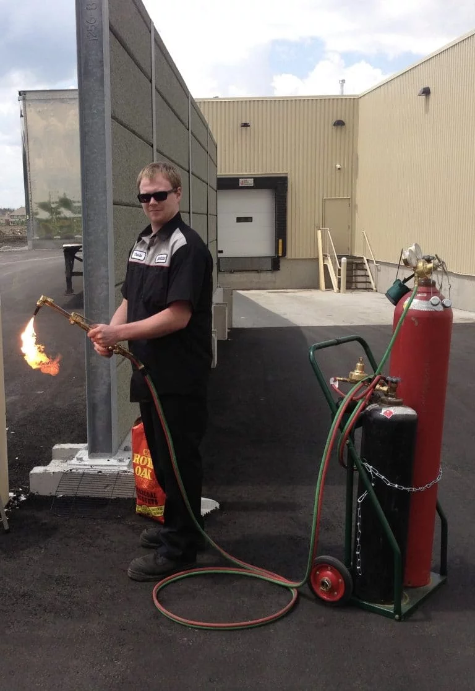

ABOUT ME
Growing up I always had a strong desire to figure out how things worked. I would disassemble everything that I could find around the house, inspecting the components,
and then reassembling them back together again… well I did that last part most of the time. Following high school, this passion led me to a career of being an Automotive Service Technician,
where I obtained my Red Seal license in January of 2012. Seeking new opportunities, I left Ontario in November of 2014, and moved to Red Deer, Alberta. Intrigued by the much greater presence of
modified light duty trucks in Alberta, I found a job working at Cap-it, where I was not only able to fuel my passion but also indulge in my creative side. Unfortunately due to an over saturated market,
the economic downturn hit Cap-it Red Deer particularly hard, and they were forced to close their doors. While seeking out new potential employers, I came to my eventual decision of returning to
school to become an Engineer, where I am continuing to feed my hunger to learn more.
